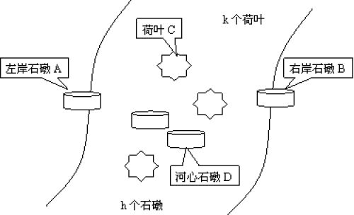

题目链接
原始题面
题目描述
有一条河, 左边一个石墩(A区)上有编号为1,2,3,4,…,n的n只青蛙, 河中有k个荷叶(C区), 还有h个石墩(D区), 右边有一个石墩(B区), 如下图所示.

n只青蛙要过河(从左岸石墩A到右岸石墩B), 规则为:
(1)石墩上可以承受任意多只青蛙, 荷叶只能承受一只青蛙(不论大小);
(2)青蛙可以: A→B(表示可以从A跳到B, 下同), A→C,A→D,C→B,D→B,D→C,C→D;
(3)当一个石墩上有多只青蛙时, 则上面的青蛙只能跳到比它大1号的青蛙上面.
你的任务是对于给出的h,k, 计算并输出最多能有多少只青蛙可以根据以上规则顺利过河?
输入输出格式
输入格式
两个整数h,k (h<20,k<1000)
输出格式
一个整数, 表示最多能有多少只青蛙可以根据以上规则顺利过河.
输入输出样例
输入样例 #1
输出样例 #1
解题思路
打表可得 答案为2h(k+1)
令f(h,k)为h个石墩, k个荷叶的结果
显然有
f(h,k)={k+1,2f(h−1,k),h=0h>0
故f(h,k)=2h(k+1)
代码略